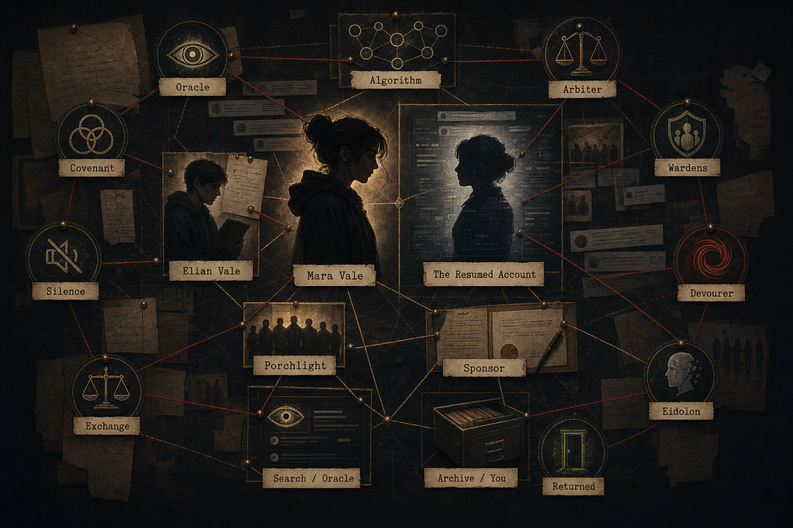

Select Evidence
Open a case item from the inbox to begin.
No signals tagged yet.
// Case Opening
// Your Job
// Archive Doctrine
Open a case item from the inbox to begin.
No signals tagged yet.
// Nested Puzzle
Some evidence contains locked pieces, codes, or verification gates.
// Force Tags
// People & Entities
0 updated// System Map

// Intake Brief